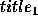
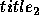

| Borrowers |
I mean your borrowers of books - those mutilators of collections, spoilers of the symmetry of shelves, and creators of odd volumes.- (Charles Lamb, Essays of Elia (1823) `The Two Races of Men')
Like Mr. Lamb, librarians have their problems with borrowers too. People don't put books back where they should. Instead, returned books are kept at the main desk until a librarian is free to replace them in the right places on the shelves. Even for librarians, putting the right book in the right place can be very time-consuming. But since many libraries are now computerized, you can write a program to help.
When a borrower takes out or returns a book, the computer keeps a record of the title. Periodically, the librarians will ask your program for a list of books that have been returned so the books can be returned to their correct places on the shelves. Before they are returned to the shelves, the returned books are sorted by author and then title using the ASCII collating sequence. Your program should output the list of returned books in the same order as they should appear on the shelves. For each book, your program should tell the librarian which book (including those previously shelved) is already on the shelf before which the returned book should go.
First, the stock of the library will be listed, one book per line, in no particular order. Initially, they are all on the shelves. No two books have the same title. The format of each line will be:
``title" by author
The end of the stock listing will be marked by a line containing only the word:
END
Following the stock list will be a series of records of books borrowed and returned, and requests from librarians for assistance in restocking the shelves. Each record will appear on a single line, in one of the following formats:
BORROW ``title"
RETURN ``title"
SHELVE
The list will be terminated by a line containing only the word:
END
Each time the SHELVE command appears, your program should output a series of instructions for the librarian, one per line, in the format:
Put ``  " after ``  "
or, for the special case of the book being the first in the collection:
Put ``title" first
After the set of instructions for each SHELVE, output a line containing only the word:
END
Assumptions & Limitations:
1. A title is at most 80 characters long.
2. An author is at most 80 characters long.
3. A title will not contain the double quote (") character.
"The Canterbury Tales" by Chaucer, G. "Algorithms" by Sedgewick, R. "The C Programming Language" by Kernighan, B. and Ritchie, D. END BORROW "Algorithms" BORROW "The C Programming Language" RETURN "Algorithms" RETURN "The C Programming Language" SHELVE END
Put "The C Programming Language" after "The Canterbury Tales" Put "Algorithms" after "The C Programming Language" END